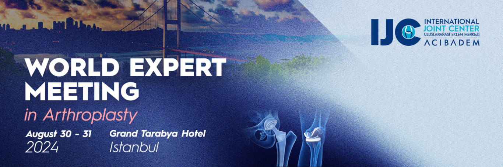

Sevgili Meslektaşlarım
Bilindiği üzere 30-31 Ağustos 2024 tarihinde İstanbul Grand Tarabya otelinde Prof. Dr. Javad Parvizi önderliğinde "Artroplasty Consensus Meeting "düzenlenmektedir. Dünyada Diz ve Kalça Artroplastisi'ndeki ortak aklı, tecrübeyi ve güncel bilgiyi günümüz iletişim koşullarına göre en sağlıklı ve akılda kalıcı biçimde sunan ve ayağımıza kadar gelmiş bu toplantıdan mümkün olduğu kadar çok meslektaşımın yararlanması bizi Türkiye Ortopedi ailesi adına ziyadesiyle mutlu edecektir. Endüstri ve ikincil katkılardan bağımsız tamamen tüm katılımcıların kendi imkanlarıyla katılacağı bu toplantıda dünyanın önde gelen Artroplasti cerrahlarının ortak bilgi birikimine ve olgu yönetimine bir büyük veri ortamında hakim olma ve kafalarımızdaki soruların büyük bir bölümüne yanıt bulma şansını yakalayacağız.
Oldukça güzel bir sosyal programı olan bu çalışmaya katılımınız, dünya Diz ve Kalça Artroplastisi'nin değerli otoriteleriyle bilimsel ve sosyal zamanı paylaşmanız özellikle genç meslektaşlarım için tavsiyeye şayandır.
Görseldeki linkte program detayları ve katılım koşullarını bulacağınız toplantıyı bilgilerinize sunuyorum.
KADAD (Kalça ve Diz Artroplasti Derneği) Yönetim Kurulu adına,
Prof. Dr. Emre Toğrul
